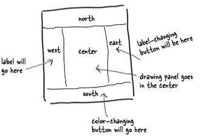
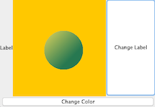

Chapter 12 Getting GUI¶
1 Your First GUI¶
A JFrame is the object that represents a window on the screen.
- It's where you put all the interface things like buttons, checkboxes, text fields, and so on.
- There are a ton of Swing components(
JButton,JRadioButton,JCheckBox,JLabel,JList,JScrollPane,JSlider,JTextArea,JTextField, etc) you can add.
A button on a frame:
import javax.swing.*; public class AButton { public static void main(String[] args){ // make a frame and a button JFrame frame = new JFrame(); JButton button = new JButton("Click me"); // Makes the program quit as soon as you close the window // If you leave this out it will just sit there on the screen forever frame.setDefaultCloseOperation(JFrame.EXIT_ON_CLOSE); // add the button to the frame's content pane frame.getContentPane().add(button); // give the frame a size, in pixels frame.setSize(300, 300); //finally, make it visible // if you forget this step, you won't see anything when you run this code. frame.setVisible(true); } }
2 Events, Sources, and Listeners¶
In Java, the process of getting and handling a user event is called *event-handling.
- There are many different event types in Java, although most involve GUI user actions.
- e.g. If the user clicks a button, that's an event.
Event Listeners¶
If you care about the button’s events, implement an interface that says, "I’m listening for your events."
A listener interface is the bridge between the listener and event source.
- An event source(事件源, e.g. a button) is an object that can turn user actions (e.g. click a mouse) into events.
- An event is an object, and you can scan through
java.awt.eventpackage in the API, to find a bunch of event classes. - An event source creates an event object when the user does something matters(like click the button).
- Every event type has a matching listener interface.(e.g. If your class wants to know about a button's ActionEvents, you implement the ActionListener.)
Jobs of Listeners, Sources, and Events:
- As a listener, my job is to implement the interface, register with the button, and provide the event-handling.
- As an event source, my job is to accept registrations (from listeners), get events from the user. and call the listener’s event-handling method (when the user clicks me).
- As an event object, I’m the argument to the event call-back method (from the interface) and my job is to carry data about the event back to the listener.
3 Making a drawing panel¶
If you want to put your own graphics on the screen, your best bet is to make your own paintable widget.
Make a subclass of JPanel and override one method, paintComponent().
paintComponent()¶
- All of your graphics code goes inside the
paintComponent()method. - Anytime the JVM thinks the display need refreshing, your
paintComponent()method will be called. - And you never call this method yourself!. However, you can ask the system to refresh the display (
repaint()), which ultimately leads topaintComponent()being called.
The argument to paintComponent() is declared as type Graphics (java.awt.Graphics).
public void paintComponent(Graphics g){}
The object referenced by the 'g' parameter is actually an instance of the Graphics2D class.
If you need to use a method from the Graphics2D class, you can't use the paintComponent parameter 'g' straight from the method. But you can cast it with a new Graphics2D variable.
Graphics2D g2d = (Graphics2D) g;
Paint a randomly-colored circle on a black background:
import javax.swing.*; import java.awt.*; import java.util.Random; // Make a subclass of JPanel, // a widget that you can add to a frame just like anything else public class RandomColoredCircle extends JPanel { public void paintComponent(Graphics g){ Graphics2D g2d = (Graphics2D) g; g2d.setColor(Color.orange); // fill the entire panel with black (the default color) g.fillRect(0,0,this.getWidth(), this.getHeight()); Random random = new Random(); Color startColor = new Color(random.nextInt(256), random.nextInt(256), random.nextInt(256)); Color endColor = new Color(random.nextInt(256), random.nextInt(256), random.nextInt(256)); GradientPaint gradient = new GradientPaint(70, 70, startColor, 150, 150, endColor); g2d.setPaint(gradient); g.fillOval(70,70,100, 100); } } public class plot { public static void main(String[] args){ RandomColoredCircle coloredCircle = new RandomColoredCircle(); JFrame frame = new JFrame(); frame.setDefaultCloseOperation(JFrame.EXIT_ON_CLOSE); frame.getContentPane().add(coloredCircle); frame.setSize(300, 300); frame.setVisible(true); } }
Output: 
4 Multiple Listeners¶
What if we add a second button in the east region, which changes the text on a label in the west region?

So We need to get TWO events. How do you get two events when you have only one actionPerformed() method?
Option one - Implement two actionPerformed() methods: You can't. It won't compile.
Option two - Register the same listener with both buttons.
public void actionPerformed(ActionEvent event) { // Query the event object to find out which button actually fired it, and use that to decide what to do if (event.getSource() == colorButton) { frame.repaint(); } else { label.setText(“That hurt!”); } }
Flaw: this does work, but in most cases it's not very OO.. Usually, it hurts maintainability and extensibility.
Option three - Create two separate ActionListener classes.
class MyGui { JFrame frame; JLabel label; void gui() { // code to instantiate the two listeners and register one // with the color button and the other with the label button } } // close class class ColorButtonListener implements ActionListener { public void actionPerformed(ActionEvent event){ frame.repaint(); } } class LabelButtonListener implements ActionListener { public void actionPerformed(ActionEvent event) { label.setText(“That hurt!”); } }
Flaw: these classes won’t have access to the variables they need to act on, ‘frame’ and ‘label’.
Inner Class¶
SOLUTION: Inner class to the rescue!
- All inner class can use all the methods and variables of the outer class, even the private ones.
- An inner class instance must be tied to an outer class instance.
import javax.swing.*; import java.awt.*; import java.awt.event.ActionEvent; import java.awt.event.ActionListener; public class PLOT { JFrame frame; JLabel label; RandomColoredCircle coloredCircle; public void go(){ // instead of passing (this) to the button's listener registration method, // pass a new instance of the appropriate listener class. JButton colorButton = new JButton("Change Color"); colorButton.addActionListener(new ColorButtonListener()); JButton labelButton = new JButton("Change Label"); labelButton.addActionListener(new LabelButtonListener()); label = new JLabel("Label"); coloredCircle = new RandomColoredCircle(); frame = new JFrame(); frame.setDefaultCloseOperation(JFrame.EXIT_ON_CLOSE); frame.getContentPane().add(BorderLayout.CENTER, coloredCircle); frame.getContentPane().add(BorderLayout.SOUTH, colorButton); frame.getContentPane().add(BorderLayout.EAST, labelButton); frame.getContentPane().add(BorderLayout.WEST, label); frame.setSize(400, 300); frame.setVisible(true); } public static void main(String[] args) { PLOT plt = new PLOT(); plt.go(); } // a button that changes a label class LabelButtonListener implements ActionListener { @Override public void actionPerformed(ActionEvent e) { label.setText("Ouch!"); } } // a button that changes the color of an oval class ColorButtonListener implements ActionListener{ @Override public void actionPerformed(ActionEvent e) { frame.repaint(); } } }
output: 